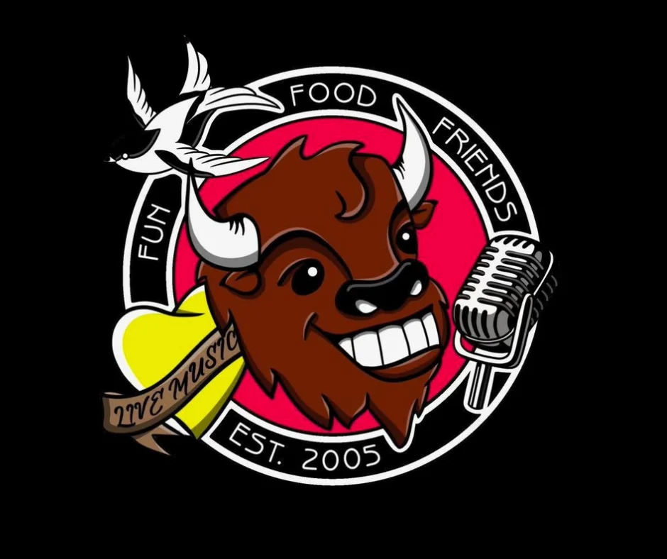
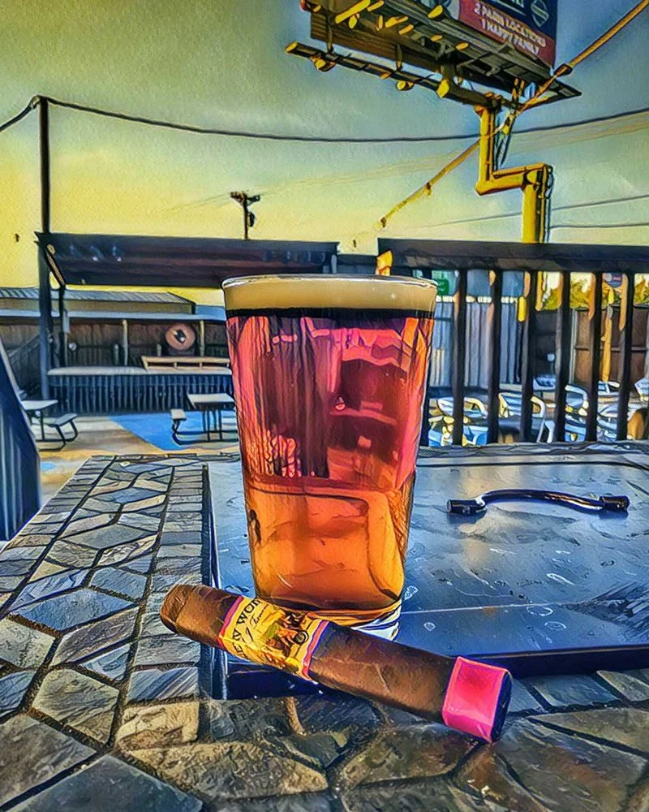

Buffalo Burger THE ORIGINAL
Buffalo patty, cheese and the fixings, with waffle fries.

BUFFALO JOE’SPARIS, TEXAS · EST. 2005RIGHT HERE ON THE LOOP SINCE 2005

THE PATIO AT JOE’SVOTED BEST “NIGHT SPOT”
2025 & 2026THE PARIS NEWSTURN IT UP A LITTLE
02 / AFTER DARKThe patio has a stage for a reason.
From Texas country bands to DJ nights, there’s more going on here than what’s on tap. Check the latest posts before you make your plans.
Find the next showFROM THE SHOW ARCHIVE 2026
A LOOK AROUND
03 / THE PUBInside at the bar or out on the patio.
Been coming for years? You’ve probably got a favorite.
3338 NE LOOP 286 PARIS, TEXAS
More from around hereYOU KNOW THE WAY
Call for today’s hours
and show details.